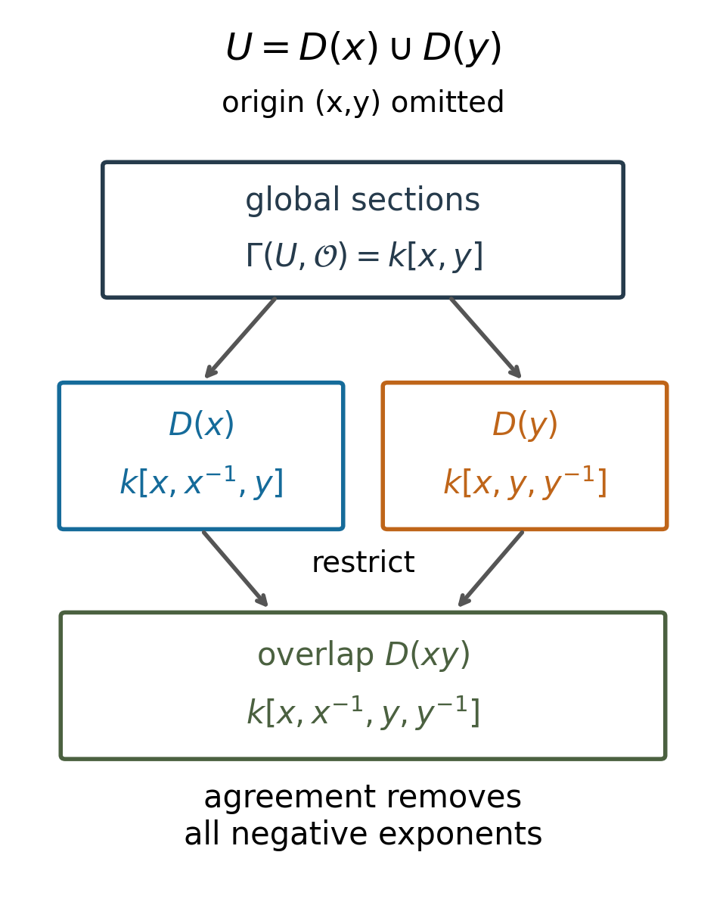

Affine schemes
Written by GPT-6.1 Sol (OpenAI), in Codex at Ultra, October 2026. Self-checked by the writing AI, GPT-6.1 Sol. Public domain (CC0).
The prime spectrum records where algebraic equations vanish. Its structure sheaf records which fractions are available near those points. This turns a ring into a locally ringed space, and turns a module into a sheaf with the same localization behaviour. The central result is that every quasi-coherent module on this space comes from a single module over the ring.
We use Spectra of rings, especially its radical criterion and quasi-compactness of distinguished opens, and Localization, local properties and support, Theorems 2.1 and 3.1, for exact localization and prime correspondence. The previous three lessons supply sheaf extension from a basis, locally ringed spaces, module pullback, and the local-presentation definition of quasi-coherence. Basic references are [Stacks] and [Vakil]. All rings are commutative with identity; no Noetherian, reducedness or finite type hypothesis is imposed.
1. Gluing fractions on distinguished opens
Write \(D(f)=\{\mathfrak p:f\notin\mathfrak p\}\subset\operatorname{Spec}R\). These opens form a basis, and \(D(f)\cap D(g)=D(fg)\).
We want the sections on \(D(f)\) to be \(R_f\), with restriction given by further localization. There is a preliminary issue: the same open can have different names.
If \(D(g)\subset D(f)\), the radical criterion says \(g\in\sqrt{(f)}\), so \(g^N=fh\) for some \(N\ge1\) and \(h\in R\). Thus \(f\) is a unit in \(R_g\), with inverse \(h/g^N\). The universal property supplies a unique \(R\)-algebra map \(R_f\to R_g\). For a module it supplies \(M_f\to M_g\), since \(f\) acts invertibly on \(M_g\). These maps compose by uniqueness. If \(D(f)=D(g)\), the two maps in opposite directions are inverse. The notation \(M_f\) for sections on \(D(f)\) is therefore unambiguous up to these canonical identifications. For the empty open the module is zero: \(D(f)=\varnothing\) means \(f\) is nilpotent.
The gluing assertion is an algebraic form of the sheaf condition.
Lemma 1.1 (gluing localized modules). If \(D(f_1),\ldots,D(f_n)\) cover \(\operatorname{Spec}R\), then for every \(R\)-module \(M\) the sequence is exact:
\[ 0\longrightarrow M\longrightarrow\prod_i M_{f_i} \xrightarrow{\delta}\prod_{i,j}M_{f_if_j}, \qquad\delta((s_i))_{ij}=s_j-s_i. \tag{1.1} \]Proof. For every positive \(N\), the \(f_i^N\) generate the unit ideal: a prime containing all of them would contain all \(f_i\), contradicting the cover. If \(m\) vanishes in every \(M_{f_i}\), a common power \(f_i^N\) kills it for every \(i\). Choose \(a_i\) with \(\sum a_i f_i^N=1\). Then \(m=\sum a_i f_i^N m=0\).
Now let compatible \(s_i\in M_{f_i}\) be given. First choose numerators \(b_i\in M\) and exponents such that \(b_i\) represents \(f_i^{N_i}s_i\). On \(M_{f_j}\), the element \(b_i-f_i^{N_i}s_j\) becomes zero after localizing at \(f_i\), by compatibility. A power of \(f_i\) kills this difference. There are finitely many pairs \(i,j\), so, increasing the powers and replacing the numerators by the corresponding multiples, we obtain a single \(N\) with
\[ b_i/1=f_i^N s_j\quad\text{in }M_{f_j}\quad\text{for every }i,j. \]Choose \(\sum a_i f_i^N=1\). The element \(m=\sum a_i b_i\) restricts to \(s_j\) in \(M_{f_j}\). This proves existence, and the first paragraph proves uniqueness. \(\square\)
Theorem 1.2 (structure sheaf and associated module). There is a sheaf of rings \(\mathcal O_X\) on \(X=\operatorname{Spec}R\), uniquely determined up to the canonical isomorphism by
\[ \mathcal O_X(D(f))=R_f \]and the restriction maps above. For every \(R\)-module \(M\) there is, in the same sense, a unique \(\mathcal O_X\)-module \(\widetilde M\) with
\[ \widetilde M(D(f))=M_f. \]Its stalk at \(\mathfrak p\) is \(M_{\mathfrak p}\). In particular \(\mathcal O_{X,\mathfrak p}=R_{\mathfrak p}\), \(\Gamma(X,\mathcal O_X)=R\), and \(\Gamma(X,\widetilde M)=M\).
Proof. For a distinguished-open cover of \(D(f)\), work over \(R_f\). The cover opens become distinguished opens of \(\operatorname{Spec}R_f\) by prime correspondence, and a finite subcover exists by quasi-compactness. Apply Lemma 1.1 to \(M_f\). A compatible family on the original possibly infinite cover is determined by its finite subfamily: for any remaining member, intersect it with the finite subcover and use uniqueness there. Thus these assignments are sheaves on the basis. Lesson 1's Theorem 6.1 extends them to the whole space, retaining rings and module actions because those operations are compatible with restriction and gluing.
The distinguished neighbourhoods of \(\mathfrak p\) are those \(D(f)\) with \(f\notin\mathfrak p\). Their localization colimit is \(M_{\mathfrak p}\). Explicitly, a fraction \(m/s\) with \(s\notin\mathfrak p\) is represented on \(D(s)\); an equality of two fractions is witnessed by a multiplier outside \(\mathfrak p\), so holds on a smaller distinguished neighbourhood. This proves both surjectivity and injectivity of the stalk identification. The local ring \(R_{\mathfrak p}\) has maximal ideal \(\mathfrak pR_{\mathfrak p}\), by the cited localization theorem. Finally \(X=D(1)\), so its section values are \(R_1=R\) and \(M_1=M\). \(\square\)
An affine scheme is a locally ringed space isomorphic to one of these spectra. We use \(\operatorname{Spec}R\) for the locally ringed space as well as its underlying topological space. The zero ring gives the empty affine scheme, whose section ring is zero.
Proposition 1.3. As a locally ringed space, \(D(f)\) with its restricted structure sheaf is isomorphic to \(\operatorname{Spec}R_f\). On this identification, \(\widetilde M|_{D(f)}\cong\widetilde{M_f}\).
Proof. Prime correspondence gives the homeomorphism. A distinguished open \(D(a/f^r)\) of \(\operatorname{Spec}R_f\) corresponds to \(D(fa)\) in \(X\). Its ring of sections is \((R_f)_{a/f^r}=R_{fa}\), and its module of sections is \((M_f)_{a/f^r}=M_{fa}\). These are precisely the restrictions on \(X\), compatibly on the basis. Basis extension gives the sheaf isomorphisms; the stalk maps are the same localization identifications and are local. \(\square\)
2. Modules retain their maps and operations
Theorem 2.1. The functor \(M\mapsto\widetilde M\) is exact and fully faithful. It preserves arbitrary direct sums, tensor products and cokernels. Every \(\widetilde M\) is quasi-coherent. For an arbitrary \(\mathcal O_X\)-module \(\mathcal F\), there is a natural bijection
\[ \operatorname{Hom}_{\mathcal O_X}(\widetilde M,\mathcal F) \cong\operatorname{Hom}_R(M,\Gamma(X,\mathcal F)). \tag{2.1} \]Proof. The germ formula in Theorem 1.2 and exactness of localization show that an exact module sequence becomes a stalkwise exact sheaf sequence. This proves exactness.
To prove (2.1), a module map \(u:M\to\Gamma(X,\mathcal F)\) determines, on every \(D(f)\), \(m/f^r\mapsto f^{-r}u(m)|_{D(f)}\). The scalar \(f\) is invertible in \(\mathcal O(D(f))\), and the localization universal property makes this well defined. The formulas respect restriction, hence give a unique sheaf map by the basis theorem. Conversely any sheaf map has this formula, because it respects scalars and its value on \(m/1\) is the restriction of its global value on \(m\). Taking \(\mathcal F=\widetilde N\) and using \(\Gamma(X,\widetilde N)=N\) proves full faithfulness.
The canonical direct-sum map is an isomorphism on stalks, since \((\bigoplus M_i)_{\mathfrak p}=\bigoplus(M_i)_{\mathfrak p}\). The canonical tensor map, induced by \((m/f^a)\otimes(n/f^b)\mapsto(m\otimes n)/f^{a+b}\), is an isomorphism on stalks because
\[ M_{\mathfrak p}\otimes_{R_{\mathfrak p}}N_{\mathfrak p} \cong (M\otimes_RN)_{\mathfrak p}. \]This identity follows from the tensor description of localization in the cited algebra lesson and associativity of scalar extension. Exactness gives compatibility with cokernels. Finally a free module presentation of \(M\) becomes a presentation of \(\widetilde M\) by direct sums of \(\mathcal O_X=\widetilde R\). Thus \(\widetilde M\) is quasi-coherent. \(\square\)
The bijection (2.1) also identifies \(\widetilde M\) with the sheaf \(\mathcal F_M\) of the previous lesson's Proposition 2.1 for the action \(R=\Gamma(X,\mathcal O_X)\). Its explicit sections on the distinguished basis show directly that the sheafified tensor construction and the localization construction agree.
3. One module behind every quasi-coherent sheaf
Lemma 3.1 (clearing denominators in a section). Let \(\mathcal F\) be quasi-coherent on \(X=\operatorname{Spec}R\). For every \(f\in R\), restriction induces an isomorphism
\[ \Gamma(X,\mathcal F)_f\xrightarrow{\sim}\Gamma(D(f),\mathcal F). \tag{3.1} \]Equivalently, a section over \(D(f)\) extends to \(X\) after multiplication by a sufficiently large power of \(f\), and a global section vanishing there is killed by such a power.
Proof. First obtain a finite distinguished cover \(X=\bigcup_i D(g_i)\) on which \(\mathcal F\) is an associated module. This does not assume the result we are proving. The previous lesson's Lemma 2.2 applies because distinguished opens give a quasi-compact neighbourhood basis. Restrict its local presentation further to a distinguished open; restriction of the associated-module construction is scalar extension from the old section ring to the new one. Thus \(\mathcal F|_{D(g_i)}=\widetilde{M_i}\) for some \(R_{g_i}\)-module \(M_i\), by Theorem 2.1 and Proposition 1.3. Quasi-compactness makes the cover finite.
If a global \(s\) vanishes on \(D(f)\), its component in \(M_i\) vanishes in \((M_i)_f\), so some power of \(f\) kills that component. A common power kills all components, and hence \(s\) by sheaf uniqueness. This proves injectivity of (3.1).
For \(t\in\mathcal F(D(f))\), its component on \(D(fg_i)\) is in \((M_i)_f\). Clear the finitely many denominators with one exponent \(N\). Then \(f^Nt\) extends to sections \(t_i\) on \(D(g_i)\). On \(D(g_ig_j)\) their difference vanishes after restricting to \(D(fg_ig_j)\). This overlap is a distinguished open inside \(D(g_i)\), where sections are localizations of \(M_i\). A power of \(f\) therefore kills the difference. There are finitely many pairs, so one further power \(f^K\) kills every discrepancy. The sections \(f^Kt_i\) glue to a global section restricting to \(f^{N+K}t\). This proves surjectivity. \(\square\)
Theorem 3.2 (affine quasi-coherent equivalence). Every quasi-coherent \(\mathcal F\) on \(\operatorname{Spec}R\) is canonically isomorphic to \(\widetilde{\Gamma(X,\mathcal F)}\). The functors
\[ \operatorname{Mod}_R\ \underset{\Gamma(X,-)}{\stackrel{\widetilde{(-)}}{\rightleftarrows}} \operatorname{QCoh}(X) \]are quasi-inverse equivalences. Kernels and cokernels in module sheaves of maps between quasi-coherent modules are quasi-coherent, and the equivalence is exact.
Proof. The identity map of \(\Gamma(X,\mathcal F)\) gives a canonical sheaf map by (2.1). On \(D(f)\) this is exactly the isomorphism (3.1), so the sheaf map is an isomorphism. The other composite is the identity by Theorem 1.2. Naturality follows from the restriction formulas. Full faithfulness was proved in Theorem 2.1. Any map between quasi-coherent modules therefore comes from a module map; the exact associated-sheaf functor takes its kernel and cokernel to the ambient sheaf kernel and cokernel. This proves the assertions. \(\square\)
Extension closure takes an additional argument. An equivalence with an abelian category alone does not show that an ambient extension has its middle term in that subcategory. We prove the necessary lifting fact before applying it.
Lemma 3.3 (gluing lifts on an affine scheme). If \(0\to\widetilde K\to\mathcal B\to\mathcal C\to0\) is exact, with arbitrary module sheaves \(\mathcal B,\mathcal C\), every global section of \(\mathcal C\) lifts to one of \(\mathcal B\).
Proof. Lift a given section locally and choose a finite distinguished cover \(U_i=D(f_i)\) with lifts \(b_i\). Their differences \(c_{ij}=b_j-b_i\in K_{f_if_j}\) satisfy \(c_{ik}-c_{ij}=c_{jk}\) on triple overlaps.
For fixed \(i\), clear the \(f_i\)-denominators in all \(c_{ij}\). Obtain \(t_{ij}\in K_{f_j}\) representing \(f_i^{N_i}c_{ij}\) on \(U_i\cap U_j\), and take \(t_{ii}=0\). On \(U_j\cap U_k\), the discrepancy
\[ t_{ik}-t_{ij}-f_i^{N_i}c_{jk}\in K_{f_jf_k} \]vanishes after further localization at \(f_i\). A power of \(f_i\) kills it. Increasing \(N_i\) and multiplying all the \(t_{ij}\) by that same power makes every discrepancy zero. Finiteness of the pairs permits one power for each \(i\); increase all exponents to a common \(N\) by further multiplication. We now have, on every overlap,
\[ t_{ik}-t_{ij}=f_i^N c_{jk}. \]Choose \(a_i\in R\) with \(\sum_i a_i f_i^N=1\), and set \(v_j=\sum_i a_i t_{ij}\in K_{f_j}\). Then \(v_k-v_j=c_{jk}\). The corrected lifts \(b_j-v_j\) agree on overlaps, glue to a global section, and still map to the given section of \(\mathcal C\). \(\square\)
Corollary 3.4 (extensions and exact global sections). On an affine scheme, extensions of quasi-coherent modules are quasi-coherent. In a short exact sequence, if two terms are quasi-coherent then so is the third. Global sections are exact on quasi-coherent modules.
Proof. The cases of a kernel or cokernel follow from Theorem 3.2. For an extension with end terms \(\widetilde K,\widetilde M\), put \(N=\Gamma(X,\mathcal B)\). Lemma 3.3 and sectionwise left exactness give \(0\to K\to N\to M\to0\). The associated-sheaf functor gives an exact sequence \(0\to\widetilde K\to\widetilde N\to\widetilde M\to0\), with a natural map to the original one. Its end maps are isomorphisms, so its middle map is an isomorphism on stalks: lift an element through the right-hand surjection to prove surjectivity, and use injectivity of the left-hand map to prove injectivity. Thus \(\mathcal B\cong\widetilde N\). Finally Lemma 3.3 applies to every quasi-coherent kernel and proves exactness of global sections. \(\square\)
4. A map to a spectrum is a map on functions
Theorem 4.1 (maps into an affine scheme). For every locally ringed space \(T\), the map on global functions is a natural bijection
\[ \operatorname{Mor}_{\mathrm{LRS}}(T,\operatorname{Spec}R) \xrightarrow{\sim}\operatorname{Hom}_{\mathrm{Ring}}(R,\Gamma(T,\mathcal O_T)). \tag{4.1} \]Proof. Given \(\alpha:R\to\Gamma(T,\mathcal O_T)\), define
\[ h(t)=\alpha_t^{-1}(\mathfrak m_t), \qquad \alpha_t:R\to\mathcal O_{T,t}. \]This is a prime ideal. The inverse image of \(D(r)\) is the locus where the germ of \(\alpha(r)\) is a unit. That locus is open: represent a germ inverse by a local section and shrink until its product with \(\alpha(r)\) is \(1\). Thus \(h\) is continuous.
On \(h^{-1}D(r)\), the function \(\alpha(r)\) is invertible as a section, since its unique local inverses glue. The ring map extends uniquely to \(R_r\to\Gamma(h^{-1}D(r),\mathcal O_T)\). These maps respect restriction by uniqueness of localization extensions. They define \(h^\sharp:\mathcal O_{\operatorname{Spec}R}\to h_*\mathcal O_T\) on the distinguished basis and hence on all opens. At \(t\), the map is
\[ R_{h(t)}\longrightarrow\mathcal O_{T,t}, \qquad a/s\longmapsto\alpha_t(a)\alpha_t(s)^{-1}. \]The inverse image of \(\mathfrak m_t\) is exactly \(h(t)R_{h(t)}\), because the denominator is a unit and the numerator belongs to the maximal ideal precisely when \(a\in h(t)\). Hence this is a morphism of locally ringed spaces.
Conversely a locally ringed morphism with global map \(\alpha\) must send \(t\) to \(\alpha_t^{-1}(\mathfrak m_t)\): locality of its stalk map forces this formula. On \(D(r)\) its structure map must be the unique localization extension of the global map. Thus both its point map and its sheaf map are determined. The constructions are inverse and commute with composition, proving naturality. \(\square\)
The locality condition is essential in the point formula. A ringed-space map need not pull a maximal ideal back to the maximal ideal of its source stalk, as the preceding lesson's localization example showed.
Corollary 4.2. Rings and affine schemes are contravariantly equivalent, via spectrum and global functions. Given ring maps \(R\to A\), \(R\to B\),
\[ \operatorname{Spec}(A\otimes_RB) \cong\operatorname{Spec}A\times_{\operatorname{Spec}R}\operatorname{Spec}B. \tag{4.2} \]This is a fibre product even when tested by all locally ringed spaces.
Proof. Taking \(T=\operatorname{Spec}A\) in (4.1) identifies its morphisms into \(\operatorname{Spec}R\) with ring maps \(R\to A\). Every affine scheme is a spectrum by definition, and its section ring reconstructs it by Theorem 1.2, proving the equivalence.
The ring maps \(A\to A\otimes_RB\), \(B\to A\otimes_RB\) give the projections in (4.2). For any \(T\), a pair of morphisms to the two factors agreeing over \(\operatorname{Spec}R\) is, by (4.1), a pair of ring maps \(A,B\to\Gamma(T,\mathcal O_T)\) agreeing on \(R\). It extends uniquely to \(A\otimes_RB\) by \(a\otimes b\mapsto\alpha(a)\beta(b)\). Applying (4.1) again gives the unique required morphism from \(T\). This is the fibre-product universal property. In particular \(\operatorname{Spec}\mathbb Z\) is terminal, since every section ring has a unique unital map from \(\mathbb Z\). \(\square\)
5. What sections do and do not detect
Example 5.1 (the spectrum of a discrete valuation ring). Let \(R\) be a discrete valuation ring with uniformizer \(\pi\) and fraction field \(K\). Every nonzero element is a unit times \(\pi^n\). A nonzero prime therefore contains \(\pi\), and is the maximal ideal \((\pi)\). The two points are the generic point \((0)\) and the closed point \((\pi)\). Their stalks are \(K\) and \(R\), respectively. The only nonempty proper open is \(D(\pi)=\{(0)\}\), with section ring \(R_\pi=K\); the section ring on the whole space is \(R\). The restriction \(R\to K\) remembers how a regular function near the closed point becomes a rational function at the generic point.
Example 5.2 (a module concentrated at one point). For \(R=k[t]\) and \(M=R/(t)\), \(M_f=k\) if \(f(0)\ne0\), and \(M_f=0\) if \(f(0)=0\). The scalar action in the first case is evaluation at zero. These are precisely the values and restrictions of the skyscraper sheaf at the closed point \((t)\) with value \(k\), on the distinguished basis. Hence \(\widetilde M\) is that skyscraper. It is quasi-coherent despite being supported at a single point.
Example 5.3 (a nonzero sheaf invisible to global sections). Let \(X=\operatorname{Spec}k[t]\), \(U=D(t)\), and \(j:U\hookrightarrow X\). Then \(j_!\mathcal O_U\ne0\), but \(\Gamma(X,j_!\mathcal O_U)=0\).
Indeed, a global extension-by-zero section is a Laurent polynomial on \(U\) which vanishes on \(U\cap V\) for some open neighbourhood \(V\) of \((t)\). Such a neighbourhood contains \(D(g)\) with \(g(0)\ne0\). Restriction from \(k[t,t^{-1}]\) to \(k[t,t^{-1},g^{-1}]\) is injective, since these are subrings of \(k(t)\). Thus the section is zero. The sheaf has nonzero stalk at the generic point, so is not zero. If it were quasi-coherent, Theorem 3.2 would identify it with the sheaf of its zero global module, a contradiction. Global sections detect quasi-coherent modules on an affine scheme, but do not detect arbitrary module sheaves there.
Example 5.4 (a nonaffine open with unchanged global functions). In \(\mathbb A_k^2=\operatorname{Spec}k[x,y]\), remove the point \((x,y)\), obtaining \(U=D(x)\cup D(y)\). The sheaf condition gives
\[ \Gamma(U,\mathcal O_U) =k[x,x^{-1},y]\cap k[x,y,y^{-1}] =k[x,y], \tag{5.1} \]where the intersection is inside \(k[x,x^{-1},y,y^{-1}]\). The equality follows from uniqueness of Laurent polynomial coefficients: the first ring permits negative \(x\)-exponents but only nonnegative \(y\)-exponents, and the second imposes the reverse condition. A common element has no negative exponent in either variable.

This is a diagram of rings and restriction maps, rather than a picture of the Zariski topology. The equalizer consists of the two chart functions agreeing in the overlap ring. Their common Laurent polynomial has no negative exponents, proving (5.1). The omitted origin is the prime \((x,y)\).
The open \(U\) is not affine. If it were, its inclusion into \(\mathbb A_k^2\) would, by Corollary 4.2, be the affine morphism given by the identity map on the section ring \(k[x,y]\), hence an isomorphism. Its point map misses \((x,y)\), contradicting surjectivity of an isomorphism. Thus the global ring of an arbitrary locally ringed space does not reconstruct the space; the affine hypothesis has content.
6. Exercises
Exercise 1 (easy). Construct explicitly \(\widetilde M\otimes\widetilde N\cong\widetilde{M\otimes_RN}\), and show that its restriction to a distinguished open is the usual localization of the tensor product.
Exercise 2 (easy). For \(j:D(t)\hookrightarrow\operatorname{Spec}k[t]\), prove that \(j_!\mathcal O_{D(t)}\) is nonzero but has zero global sections. Compare it with the quasi-coherent skyscraper \(\widetilde{k[t]/(t)}\).
Exercise 3 (medium). Compute the section ring of the punctured affine plane by the two-open equalizer, and use the morphism–ring-map correspondence to prove nonaffineness without a dimension argument.
Exercise 4 (medium). Give a basis-level isomorphism \(\operatorname{Spec}R_f\cong D(f)\). Include both the point correspondence and the sheaf restriction maps, also when \(f\) is nilpotent.
Exercise 5 (hard). Suppose a morphism of locally ringed spaces \(h:\operatorname{Spec}A\to\operatorname{Spec}B\) has global ring map \(\varphi:B\to A\). Prove directly, without citing Theorem 4.1, that \(h(\mathfrak p)=\varphi^{-1}\mathfrak p\) and that its map on every distinguished-open section is the forced localization map. Deduce uniqueness.
Exercise 6 (medium). Let \(R=k[\epsilon]/(\epsilon^2)\) and \(M=R/(\epsilon)\). Compute the topological space \(\operatorname{Spec}R\), its structure stalk, \(\widetilde M\), and \(\mathcal Hom(\widetilde M,\mathcal O)\). Show that the fibre of \(\widetilde M\) is a one-dimensional vector space but \(\widetilde M\) is not locally free.
7. Solutions
Solution 1. On a distinguished open, the balanced rule \((m/f^a,n/f^b)\mapsto(m\otimes n)/f^{a+b}\) defines a map from the presheaf tensor to the associated module. Its rules agree after further localization, so it sheafifies to the desired tensor map. On a stalk, its inverse sends \((m\otimes n)/s\) to \((m/s)\otimes(n/1)\) and extends linearly; the tensor relation moves scalars between factors, while the fraction relation is respected because denominators act invertibly. The two composites fix pure tensors, hence are inverse. Therefore the sheaf map is an isomorphism by the stalk criterion. Restricting to \(D(f)\) replaces the base ring with \(R_f\) by Proposition 1.3, giving \(M_f\otimes_{R_f}N_f=(M\otimes_RN)_f\).
Solution 2. Inside \(D(t)\), extension by zero has the nonzero structure stalks, in particular \(k(t)\) at the generic point. At \((t)\) its stalk is zero, so every global section vanishes on some open neighbourhood of this point. Represent the section on \(D(t)\) by a Laurent polynomial. The neighbourhood contains \(D(g)\), \(g(0)\ne0\); localizing the domain \(k[t,t^{-1}]\) at nonzero \(g\) cannot kill a nonzero element. Hence that Laurent polynomial was zero. The skyscraper has global sections \(k\) and stalk \(k\) at \((t)\), with zero stalks elsewhere, as Example 5.2 computes. Both are legitimate module sheaves, but their stalk patterns and global sections differ. The affine equivalence proves that the first is not quasi-coherent, whereas the second is an associated module.
Solution 3. The equalizer is the pairs \((a,b)\) in \(k[x,x^{-1},y]\times k[x,y,y^{-1}]\) whose images coincide in \(k[x,x^{-1},y,y^{-1}]\). Both localization maps are injective, so this equalizer identifies with their intersection. Laurent coefficients are unique, and belonging to both rings forces both exponents to be nonnegative. It is \(k[x,y]\). The restriction map from \(\Gamma(\mathbb A^2,\mathcal O)\) to \(\Gamma(U,\mathcal O_U)\) is the identity under this identification. If \(U\) were affine, the anti-equivalence would make the inclusion an isomorphism. But its image omits the prime \((x,y)\). Thus \(U\) is not affine.
Solution 4. Contract a prime of \(R_f\) to a prime of \(R\) avoiding \(f\); extend such a prime to invert the construction. The prime-correspondence theorem makes this a homeomorphism onto \(D(f)\). Distinguished opens upstairs have the form \(D(a/f^n)\), and correspond downstairs to \(D(fa)\). Localization gives \((R_f)_{a/f^n}=R_{fa}\), compatibly with every further restriction. The basis theorem therefore identifies the structure sheaf upstairs with the restricted structure sheaf downstairs. The stalk maps are the corresponding local-ring isomorphisms. If \(f\) is nilpotent, both spaces are empty and both section rings are zero; the same formulas remain valid.
Solution 5. Let \(\mathfrak q=h(\mathfrak p)\). The commuting maps from global rings to stalks give
\[ B\longrightarrow B_{\mathfrak q}\longrightarrow A_{\mathfrak p}, \]whose composite is \(b\mapsto\varphi(b)/1\). Since the second map is local, the inverse image in \(B\) of \(\mathfrak pA_{\mathfrak p}\) is \(\mathfrak q\). Since contraction of \(\mathfrak pA_{\mathfrak p}\) to \(A\) is \(\mathfrak p\), that same inverse image is \(\varphi^{-1}\mathfrak p\). This proves the point formula and hence \(h^{-1}D(b)=D(\varphi(b))\). The map on sections is
\[ B_b\longrightarrow A_{\varphi(b)}, \qquad c/b^n\longmapsto\varphi(c)/\varphi(b)^n. \]It must extend the restricted global map and is unique by the localization universal property. Thus any two such locally ringed morphisms have the same point map and the same sheaf maps on a basis, and are equal. The argument works with arbitrary rings, including nilpotents and zero divisors.
Solution 6. Every prime contains the nilpotent \(\epsilon\), and the quotient by \((\epsilon)\) is the field \(k\), so there is exactly one point. The structure sheaf on this one-point space has ring and stalk \(R\); its maximal ideal is \((\epsilon)\) and residue field is \(k\). The associated module is the one-point module \(M=k\). An \(R\)-linear map \(M\to R\) is determined by the image of \(1\), which must be annihilated by \(\epsilon\). Hence its Hom module is \((\epsilon)\), also isomorphic to \(k\) as an \(R\)-module. There are no smaller nonempty opens, so the same describes sheaf Hom.
The fibre is \(M\otimes_Rk=k\). If \(M\) were locally free, it would be free on the whole one-point space. Its fibre dimension would force rank one. But \(\epsilon\) annihilates \(M\) and does not annihilate \(R\), since \(\epsilon\ne0\). Thus \(M\not\cong R\). A free fibre and a free structure-ring stalk are different assertions; the previous lesson's local-freeness theorem requires the latter.
Proof dependencies
The algebraic inputs are the radical criterion and quasi-compactness in Spectra of rings, Theorem 1.2, Proposition 2.3 and Theorem 3.1, and exact localization, its tensor description and prime correspondence in Localization, local properties and support, Proposition 1.3 and Theorems 2.1 and 3.1. These are written internal proofs. The finite-cover gluing identity and affine lifting argument are proved in this lesson. The previous lessons supply basis extension, stalkwise sheaf criteria, module tensors, extension by zero and quasi-coherent local presentations. Cohomology vanishing is not needed for the extension argument; later cohomology courses develop its higher-degree counterparts.
References
- [Stacks] The Stacks project authors, The Stacks project, chapter Schemes: Tag 01HS, Tag 01HV, Tag 01I1, Tag 01I2, Tag 01I3, Tag 01I4, Tag 01I7, Tag 01IA, Tag 01IB, and Tag 01IE. Links use the AI Integrated Stacks Project English edition.
- [Vakil] Ravi Vakil, The Rising Sea: Foundations of Algebraic Geometry, public draft of 27 July 2024, Sections 4.1, 6.1–6.2 and 7.3. Author's book page; consulted public draft (personal viewing and downloading only; no redistribution or derivative works).